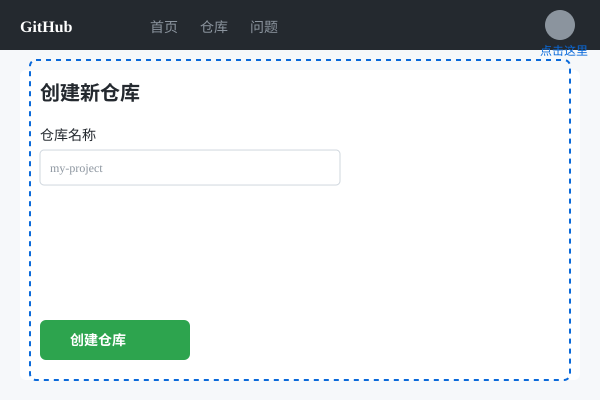

8. GitHub入门
🐙
GitHub是全球最大的代码托管平台，也是程序员的"社交网络"！
注册GitHub账号
- 访问 https://github.com
- 点击"Sign up"注册
- 填写邮箱、密码、用户名
- 验证邮箱完成注册
创建远程仓库

点击"+"号后选择"New repository"
- 登录GitHub，点击右上角"+"号
- 选择"New repository"
- 填写仓库名称和描述
- 选择Public（公开）或Private（私有）
- 点击"Create repository"
连接本地仓库
# 复制GitHub仓库地址，然后执行：
git remote add origin https://github.com/用户名/仓库名.git
# 推送到GitHub
git push -u origin mainGitHub vs Git
Git是本地的版本控制工具
GitHub是托管Git仓库的在线平台
简单说：Git是"引擎"，GitHub是"停车场"